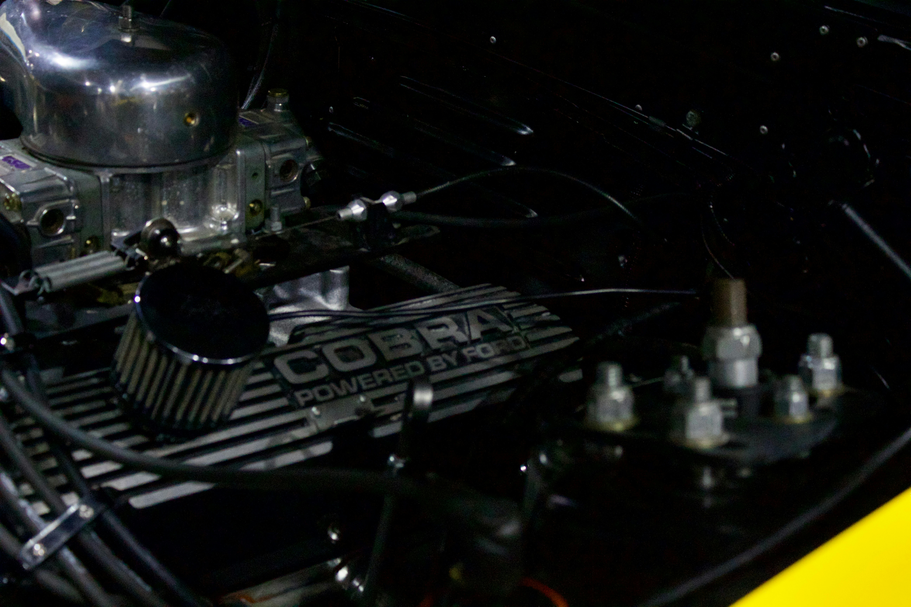

Reparacion de Motor
El cliente llegó con pérdida de potencia y ruidos en el motor. Se realizó diagnóstico completo, cambio de juntas, limpieza de inyectores y puesta a punto. El vehículo recuperó su rendimiento original y quedó listo para la entrega en menos de 48 horas.

”Excelente Trabajo, Muy satisfecho!”